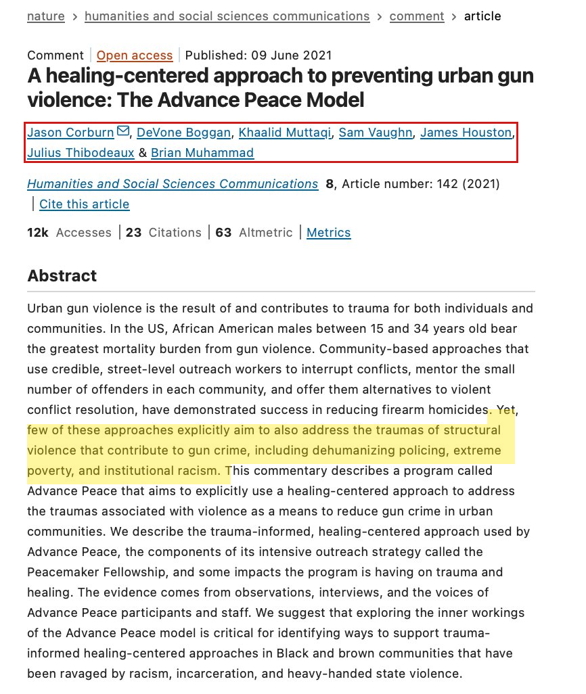
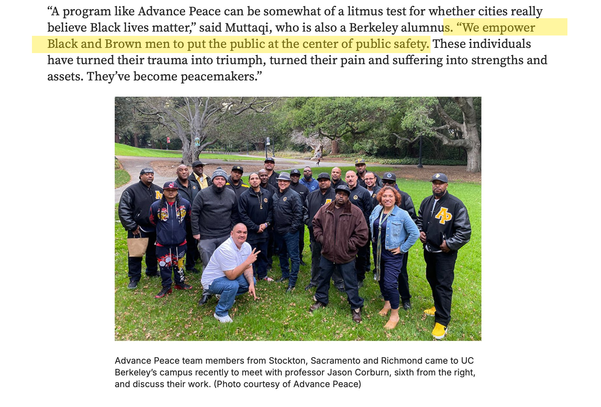

Sacramento contracted with Advance Peace for a 20 to 25 percent reduction in gun-related assaults and homicides over two years. The program's own evaluators have published at least six different reduction percentages for that window. Sacramento Police recorded the deadliest year since 2006 while the program was operating. Both stories belong to the same program.
On August 29, 2017, the Sacramento City Council voted nine to zero to bring the Advance Peace Peacemaker Fellowship to Sacramento.01 The contract was signed in December 2017. The first cohort of fellows began the program in mid-2018.
The program was sold on a specific number. ABC10 News, reporting on the December 2017 contract signing, quoted the city's own media materials: "The Advance Peace organization has committed to a reduction of 20-25 percent in gun violence by the completion of the program by the first group of participants."02
The City of Sacramento's own news service, in an August 2017 article previewing the council vote, was even more specific. It described the precedent the city was buying into: "Richmond experienced a 50 percent reduction in firearm assaults and 54 percent reduction in related homicides over a five-year period after the program launch."03
Two numbers, then. A 20 to 25 percent reduction by year two as the floor. A 50-plus percent reduction over five years as the destination.
At the same August 2017 council meeting, then-Councilwoman Angelique Ashby flagged a discrepancy that would matter four years later. The resolution authorized a four-year agreement; the contract itself was written for three years. Per Fox40's coverage of the meeting: "In multiple places in the resolution, we say it's a four-year contract, in the contract, we call it a three-year contract, those are key critical terms, they don't agree."04 The discrepancy was never publicly resolved. The program ended in December 2021, roughly four calendar years after the contract was signed but with city funding flowing for closer to three.
Before working through the academic tables and per-zone breakdowns, look at the simplest possible test: did Sacramento have fewer murders during the program than before it?
The Sacramento Police Department's own homicide records, including the department's January 2022 video news release on 2021 crime statistics, are unambiguous. Per SacPD spokesperson Sgt. Chad Lewis on that release: "In 2021, there were 58 homicides in Sacramento which was the highest number of homicides in the city since 2006."05
| Year | Homicides | Program status | vs. 2017 baseline |
|---|---|---|---|
| 2016 | 41 | Before AP | +5 |
| 2017 | 36 | Before AP (baseline year) | 0 |
| 2018 | 36 | AP launched July (partial year) | 0 |
| 2019 | 35 | Original Peacemaker Fellowship full year | −1 |
| 2020 | 41 | State-funded extension; Youth Fellowship begins | +5 |
| 2021 | 58 | Final year of program; city funding expires Dec 31 | +22 |
| 2022 | 47 | After AP | +11 |
| 2023 | 37 | After AP | +1 |
Sacramento had 36 homicides in 2017, the year before Advance Peace launched. It had 35 homicides in 2019, the final year of the original 18-month Peacemaker Fellowship. The change was one fewer killing.
One fewer homicide is roughly 2.8 percent. The contract called for 20 to 25 percent. The shortfall is approximately an order of magnitude.
Then the trajectory inverted. In 2020, while Advance Peace was still operating in Sacramento under a state-funded extension and a newly launched Youth Peacemaker Fellowship,06 homicides climbed to 41. In 2021, the program's final operational year, they climbed to 58. That is the highest single-year homicide count Sacramento has recorded since 2006, and it happened during the program, not after it.
The narrative that survived in public memory was that Sacramento had two consecutive years without a juvenile homicide in 2018 and 2019, that the program produced this result, and that politicians abandoned the program just as it was working. The narrative does not survive contact with 2020 and 2021. If the program was responsible for the flat homicide line in 2018 and 2019, the program is also responsible for the spike to 58 in 2021. The program was operational the entire time.
Defenders did not present 2020 and 2021 as a program failure. They continued to cite the 2018 and 2019 number as evidence of program success and described the December 2021 non-renewal as the cause of post-program violence. The post-program violence, by the time the program ended, had already happened.
The strongest documentation that the Advance Peace evaluation has been mathematically negotiated rather than methodologically determined sits inside the program's own evaluation documents. The same intervention window has been reported with at least six different reduction percentages, depending on which document the reader is holding.
All seven figures below describe the same calendar period, the same program, the same city, and the same evaluator. None of them are wrong on their face. They simply produce different headlines for different audiences.
| Reported figure | Methodology | Source |
|---|---|---|
| 10.1% | Raw mean monthly comparison, citywide | Corburn & Fukutome-Lopez, March 2020 working paper07 |
| 18% | Interrupted time series, citywide | Corburn et al. 2022, Urban Science abstract08 |
| 21% | Eighteen-month treatment vs. 4-year pre-period average | Corburn et al. 2021, Humanities and Social Sciences Communications09 |
| 22% | Per Berkeley News attribution to "March 2020 study" | UC Berkeley News, March 17, 202110 |
| 27% | Interrupted time series counterfactual, AP zones only | Corburn & Fukutome-Lopez 2020 working paper07 |
| 29% | Maximum per-zone reduction reported in peer-reviewed paper | Corburn et al. 2022, Urban Science abstract08 |
| 39% | Reduction "in Del Paso Heights" | UC Berkeley News, March 17, 202110 |
The 39 percent figure is the one that traveled. It anchored the press release. It anchored the case for renewing and expanding the program. It does not appear in the peer-reviewed paper that the press release was promoting. The peer-reviewed paper says the maximum reduction in any single neighborhood was 29 percent.
This pattern, of selecting the comparison window and the geographic unit and the statistical method that produces the largest favorable number, is sometimes called HARKing in the methodology literature, short for Hypothesizing After the Results are Known. In the Advance Peace literature, the hypothesis was settled by contract: a 20 to 25 percent reduction citywide. None of the figures above that come from peer-reviewed sources reach the contractual threshold using the contractual scope. The figures that do reach it are the ones in the press release.
The strangest feature of the Advance Peace literature is that it tells two completely different stories about the cause of urban gun violence, and both stories appear in the same paper, by the same authors, on the same pages.
The 2021 paper in Humanities and Social Sciences Communications, a Nature Portfolio journal, is the program's flagship academic publication. Its authors include Jason Corburn (the lead evaluator), DeVone Boggan (Advance Peace founder and CEO), Khaalid Muttaqi (Advance Peace COO and former Sacramento Director of Gang Prevention), and program managers from Sacramento, Stockton, and Richmond. Per the paper's own abstract, the program is described as serving "Black and brown communities that have been ravaged by racism, incarceration, and heavy-handed state violence."
That is story one. Story two is the operational mechanism, described later in the same paper.
Both passages are in the same paper. The cause is structural and historical and racial, enacted by state institutions ravaging Black communities. The mechanism is identifying African-American men under 24 and paying them up to $1,000 a month if a mentor signs off on their progress. The same authors describe both the cause and the mechanism. They do not reconcile them.
If the cause is structural racism enacted by white-controlled institutions, the operational solution should target those institutions. Defund the police, redistribute housing and educational resources, prosecute discrimination. The Advance Peace operational mechanism does none of those things. It identifies, in each city, the small number of individual men most likely to shoot. It enrolls them in an 18-month fellowship. After six months of compliance, fellows become eligible for monthly stipends of up to $1,000.09
The two stories cannot both be operative. Either the violence is caused by structural conditions that affect everyone in the affected community equally, in which case targeting individual men cannot address the cause; or the violence is caused by the choices of a small number of individual men, in which case structural racism is not the operative variable. They are deployed simultaneously anyway, because they serve different purposes. The structural framing supplies the moral case for the program: communities have been wronged, this is a remedy. The individual-targeting mechanism supplies the operational case: violence is concentrated, we know how to interrupt it. Together they let the program claim moral authority and operational legitimacy without ever having to choose.
What the Nature paper says in academic language, the UC Berkeley News press release of March 17, 2021 says more directly. The press release was written to promote the Sacramento evaluation, and quotes the same authors:
Three speakers in three publications, framing the program along the same axis. Corburn names the cause as racist policing. Muttaqi names the mechanism as paying Black and Brown men. Boggan names the success criterion as whether an individual man chooses not to fire a gun. Each speaker is consistent with himself. The combination of the three is incoherent.
UC Berkeley's School of Public Health, in promoting the 2025 MIT Press book co-authored by Corburn and Boggan, distills the same pattern. Corburn: "the root causes of urban gun violence include racism, discrimination, redlining, and eugenics." Boggan, in the same interview: "We've already solved 99% of the problem. Less than 1% of a city's population is at the center of driving gun violence."12 The cause is structural and historical and racial. The solution is to find the one percent and pay them.


Marketing materials for Advance Peace lead with system-level statistics. Inside the program, the operational reality was less abstract.
Per Khaalid Muttaqi in an August 2022 interview with The Appeal, summarizing fellow outcomes during the original Sacramento Peacemaker Fellowship: "In Sacramento, five fellows were arrested on gun-related charges during the 18-month fellowship. More than half were arrested on other charges. One fellow was shot and killed."13
Muttaqi's framing in the same interview: "They're hard to reach. And to be quite honest with you, they can be very hard to serve." This is the program's COO, describing the program's participants. The "98% alive at evaluation" headline figure that appeared in many press accounts of Advance Peace Sacramento is consistent with this picture only because the alternative reference class (men identified by police as most likely to be shot, in a city with a stable annual homicide rate) was already characterized by very high one-year survival, before any intervention.
Across the four-year Sacramento program, no published evaluation has reconciled these participant-level outcomes with the program's claimed 21 percent citywide reduction. Five fellows arrested for gun charges during a fellowship designed to interrupt their gun use is not a small number relative to the program's scale.
In Fresno, the program's operational mechanism produced a more direct failure mode. In April 2022, Leonard Smith, a Neighborhood Change Agent for Advance Peace Fresno, was arrested in a multi-agency gang takedown announced by California Attorney General Rob Bonta. Court documents allege Smith leaked information to gang members about a police murder investigation and conspired in two murders.14
Fresno Police Chief Paco Balderrama, per the city's official statement: "Due to the criminal indictment of an Advance Peace member for conspiracy to commit murder, threats made to at least one city council member, and the misuse of sensitive information provided to Advance Peace, Fresno PD could no longer partner, share information, or work with Advance Peace under the current model."15
Mayor Jerry Dyer, who had supported the program at launch, told ABC30 he could not continue to support it under the current model.16 Fresno's Advance Peace contract was terminated in 2022.
The Fresno failure is structural, not idiosyncratic. The program's core operational premise is to hire formerly incarcerated people with gang-adjacent credibility to mentor active gang members. The credibility that makes the model work is the same credibility that creates the conditions in which an active employee can leak police information to gang members. There is no version of Advance Peace that resolves this without becoming a different program.
In March 2021, Mayor Bill de Blasio and Public Advocate Jumaane Williams announced that New York City would launch a five-precinct Advance Peace pilot.
The press release leading the announcement cited Sacramento's evaluated outcomes as the basis for the expansion: "A peer-reviewed study of the implementation of Advance Peace in Sacramento demonstrates a 27% reduction in gun violence in the program's catchment area over 2 years."17
The 27 percent figure is the AP-zone-only interrupted time series counterfactual estimate from the 2020 working paper. It is one of seven figures in the menu above. It is not the citywide figure. It was selected because it produced the strongest case for expansion.
Nineteen months later, in November 2022, The Trace published a follow-up. Per its reporting:
Boggan's withdrawal letter to the New York City Mayor's Office of Criminal Justice, dated September 2022 and quoted by The Trace: "We have decided to forego any payment from the city of New York. We have experienced a process that has lacked good character and integrity as to the intention of your local government."
The pilot was sold on Sacramento's outcome. The pilot enrolled no one. The collapse received a fraction of the press coverage that the launch received. The 27 percent figure remains in circulation.
In June 2022, Corburn, Boggan and Muttaqi published a follow-up paper in the Journal of Urban Health, titled "Preventing Urban Firearm Homicides during COVID-19: Preliminary Results from Three Cities with the Advance Peace Program."
The paper makes two claims about Sacramento that sit a few paragraphs apart in the same publication. Per Table 1: "The percent change from pre-pandemic to pandemic periods ranged from + 39% in Stockton and Sacramento to + 6.4% in Richmond."19
Per the same paper's headline finding: a 5 to 52 percent decrease in gun homicides during the 2020 to 2021 period compared to the 2018 to 2019 period for neighborhoods with a gun violence prevention program operating there.
The first finding says citywide gun violence in Sacramento increased 39 percent during the pandemic period while Advance Peace was operating. The second finding says specific Advance Peace neighborhoods showed a decrease compared to the prior period. Both findings are in the same paper. The first one almost never traveled.
Which of these two numbers describes Sacramento as a city? The peer-reviewed answer, in Table 1 of the program's own evaluation: gun violence in Sacramento increased 39 percent. The author of the paper that reports this is the same author who reports the favorable neighborhood-level numbers in the same paper. The findings are not in conflict mathematically; they describe different geographic units. They are in conflict rhetorically; only one was promoted.
A subtle structural feature of California's gun violence intervention funding produces a conflict of interest that has not been publicly examined. The same nonprofit that frames Black violence as caused by white institutions also receives state funds and acts as the legal pass-through for the cash that pays individual Black men.
The Center at Sierra Health Foundation, EIN 45-5282243, describes its work as supporting "programs that work to improve health and racial equity in California."20 Its parent foundation lists racial equity and racial justice among its core program areas.
The same Center is the fiscal sponsor for Advance Peace. Confirmed in the BSCC CalVIP Cohort 3 final evaluation report, June 2024, in language describing the Youth Peacemaker Fellowship Project's contractual structure: "The Center at Sierra Health Foundation served as the fiscal sponsor for Advanced Peace, who would manage primary service provision for the program."21
This means the Center is not a passive grantmaker to Advance Peace. The state writes checks to the Center. The Center pays Advance Peace. Advance Peace pays the fellows. The Center's racial equity framing supplies the moral case for the program. The Center's pass-through function supplies the operational mechanism. The same institution does both jobs.
Per IRS records, the Center had FY2024 revenue of approximately $197.5 million, almost all of it from government grants passing through to programs in California. Advance Peace itself, EIN 81-3858984, files separately as a 501(c)(3); revenue and compensation figures are available via the IRS Tax-Exempt Organization Search.22
Federal funding flows separately. The Bureau of Justice Assistance awarded Advance Peace the "National Peacemakers Network" Community Violence Intervention grant, supporting program operations in Stockton, Vallejo, Antioch, Fresno, Pomona, Richmond, Woodland (CA); Fort Worth (TX); Lansing (MI); and Rochester (NY).23 Arnold Ventures funds Corburn's evaluation work across multiple cities.24 The funding ecosystem is national. The methodology that produced the original Sacramento numbers is the methodology being applied across all of those cities.
Sacramento city officials did not publicly explain why they declined to renew the Advance Peace contract at the end of 2021.
The non-renewal itself is documented. Per The Appeal, August 2022: "In Sacramento, for example, officials opted not to renew Advance Peace in 2021 after the end of its four-year pilot."13
Per CapRadio, April 2022, three months after the contract expired and just weeks after Sacramento's deadliest mass shooting in city history on K Street: "Advance Peace, which is based in the Bay Area, previously had contracted to work with the city, but its partnership ended in 2021. It's unclear why it wasn't renewed."25
"It's unclear why it wasn't renewed" is itself the finding. As of April 2022, four months after the contract expired, the City Manager's office had not publicly articulated a reason for ending a program billed as evidence-based. Advance Peace itself, on its Sacramento website, posted only this: "Advance Peace and the Peacemaker Fellowship is no longer operative in Sacramento. The City of Sacramento and its leadership has made a formal decision to no longer support the Advance Peace model there."26
Subsequent political messaging filled the silence. Mayoral candidate and former Sacramento County public health official Dr. Flojaune Cofer, in 2024 campaign materials, framed the non-renewal as a betrayal: politicians cut a working program and children died as a result. The framing depends on a counterfactual: that Advance Peace would have prevented the 2022, 2023, and post-program killings if it had been continued. The data does not support that counterfactual. While the program was operational, in 2020 and 2021, Sacramento recorded 41 and 58 homicides respectively. The 58-homicide year was the deadliest the city had seen in fifteen years. The post-program counterfactual the campaign messaging requires is a counterfactual to a program that was demonstrably underperforming during its own operational window.
The simplest explanation for the non-renewal is also the most consistent with the data the city had access to in late 2021: the program did not deliver what the contract promised, and the city's leadership decided not to publicly say so.
Each step in the construction of the Advance Peace narrative was, by itself, defensible. The cumulative drift was substantial.
The lead evaluator had a choice of comparison windows and statistical methods that produced a range of headline numbers between roughly 8 percent and roughly 39 percent. He included multiple of these figures in the same documents. He chose to lead with the largest in the abstracts and press releases. The press releases did the natural thing and propagated the largest. Allied institutions cited the press release figures rather than the peer-reviewed table numbers. Politicians simplified the press release figures into single sentences. By the time the claim arrived in a 2024 campaign, the underlying ten percent finding from the program's own working paper was no longer visible anywhere in the public record.
The structural racism framing supplied the moral cover. The pay-the-fellows mechanism supplied the operational legitimacy. Together they made the program politically untouchable for several years. When the city quietly declined to renew the contract, the same framing was deployed to attribute the post-program violence to the non-renewal rather than to the program's own underperformance.
External academic evaluators, including those broadly sympathetic to the model, have flagged the underlying evidence problem in plainer terms. The John Jay College Research and Evaluation Center, in its 2020 review of police-alternative violence reduction programs, wrote that "studies of Cure Violence and similar models (e.g. California's Advance Peace) continue to produce promising, but less than definitive evidence of program effects."27 "Less than definitive" is the careful academic phrasing. The Sacramento contract was specific. The Sacramento data is specific. The gap between the two is also specific.
For Advance Peace specifically, the relevance is this. The contract metric, a 20 to 25 percent citywide reduction in gun-related assaults and homicides, was about the operational mechanism. The metric was not met. The political defense of the program shifted to the moral framing instead. That is the pattern.
Sacramento ended the program. Sacramento's homicides during the program's final year were the highest the city had seen since 2006. Both of those facts are in the same record. They have not yet been read together.